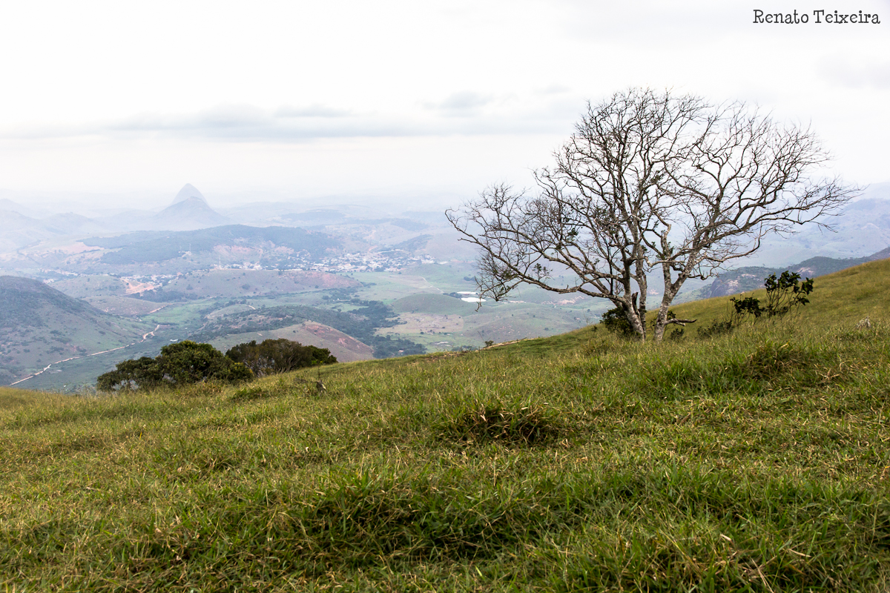

Ataléia...
Pequena cidade, grandes paisagens!
Ataléia é uma pequena cidade situada no nordeste de Minas Gerais, na divisa com o Espírito Santo. Protegida por altas montanhas, às margens do rio Norte, Ataléia vai seguindo a História.

ÚLTIMAS POSTAGENS


Acampamento na montanha verde
O Mundo das Montanhas participou de mais uma aventura na Pedra de Sr. Delson ou Montanha Verde. Desta vez, o canal de youtube Guia 118 cobriu a expedição, filmando a aventura.
Postado por Samuel em

As orquídeas ataleenses
Espécies de orquídeas ataleenses são catalogadas pela Ciências novamente. Trata-se de mais duas novas plantas que foram inscritas na Coletânea de Orquídeas Brasileiras...
Postado por Samuel em